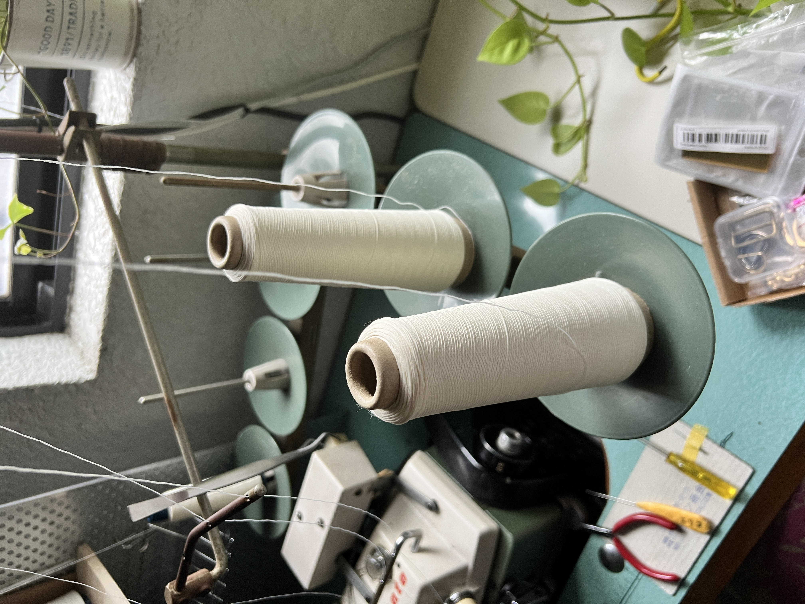

A LITTLE SECRET
WELCOME TO THE SECRET PAGE.
このページを見つけてくれたあなたは、
TellQの商品をお迎えしてくださった、大切なお客様です。
数あるブランドの中からTellQを見つけ、
商品を購入してくださり、本当にありがとうございます。
皆さんのお手元に商品が届いたことで、
「100年の歴史を今のあなたへ」という夢がひとつ叶いました。
そして、皆さんの笑顔や温かいお言葉が、
これからの私の糧になっていくと思います。
ここから先は、普段のSNSではなかなかお見せすることのない、TellQのもうひとつの物語です。
表では綺麗な部分ばかりを発信していますが、ここまで来るまでに、何度も何度も困難がありました。
自信をなくすことも、不安になることもたくさんありました。
シークレットページでは、そんな普段は見せることのない、泥臭い部分も赤裸々に発信していきます。
商品が生まれるまでの裏側や、悩み、失敗、挑戦。そして、まだ誰にも話していないことも。
このページを見つけてくれた皆さんだからこそ、知ってもらいたいことを、ここに綴っていきます。
ここでしか見られないTellQの姿を通して、もっと身近に感じていただき、今お手元にある商品にも、さらに愛着を持っていただけたら嬉しいです。
ここから先は、TellQをお迎えしてくれた
あなたにだけ届ける物語。
これからも、どうぞよろしくお願いします。

FROM THE PROCESS
自信から出た不安
私は幼い頃からものづくりが好きで、ミシンも幼稚園の頃から母に教えてもらっていました。
そんな環境で育った私は、自分の欲しいものは自分で作る、そんな日々を過ごしてきました。
その延長で文化服装学院に進学し、卒業後もものづくりに励んできました。
TellQを立ち上げた当初も、自分で何度も試作品を作り、
納得がいくまで試行錯誤を繰り返していました。
しかし、最初に立ちはだかった壁は、自分には量産の経験も、
既製品を作った経験もないということでした。
自分が好きなものを作ることと、お客様に届けられる品質の商品を作ることは、全く違う。
そのことに気づいた瞬間、一気に不安が押し寄せてきました。
「私一人ではブランドを続けていけないかもしれない」
自分の力を過信していたことにも気づき、正直、とてもショックでした。
でも、そのときふと思い出したんです。
私がこれまで自信を持ってものづくりを続けてこられたのは、
いつも隣で母が支えてくれていたからだということを。
分からないことがあれば、すぐに母に聞きに行く。無理なお願いをしても、
母はいつも器用に手直ししてくれました。
振り返れば、私のものづくりの原点には、いつも母の存在がありました。
だからこそ、これからのTellQも母と一緒に作っていきたい。
そう強く思うようになりました。
自分一人の力だけではなく、生産のプロである母の力が必要だったのです。
2026年8月、母を説得し、9月からTellQのチームの一員として協力してもらえることになりました。
一緒にブランドを作ってくれること、本当に感謝しています。
ママ、ありがとう。
そして10月31日、無事に皆さんへ販売開始をお知らせすることができました。
ここまで来られたことが、心から嬉しいです。
今では家族と過ごす時間も増え、以前よりも充実した気持ちでものづくりに向き合えています。
一人で頑張ることだけが、自分の力ではない。
誰かと支え合いながら、一緒に何かを作り上げていくことも、大切なものづくりの形なのだと気づきました。
そんなかけがえのない時間と、
支えてくれる家族への感謝を大切にしながら、
これからも一つひとつの商品を作り続けていきます。
それまでは、次の更新をお楽しみに
We are still becoming.
MOVING MEMORIES
文化服装学院での記録
YouTubeで動画を見る